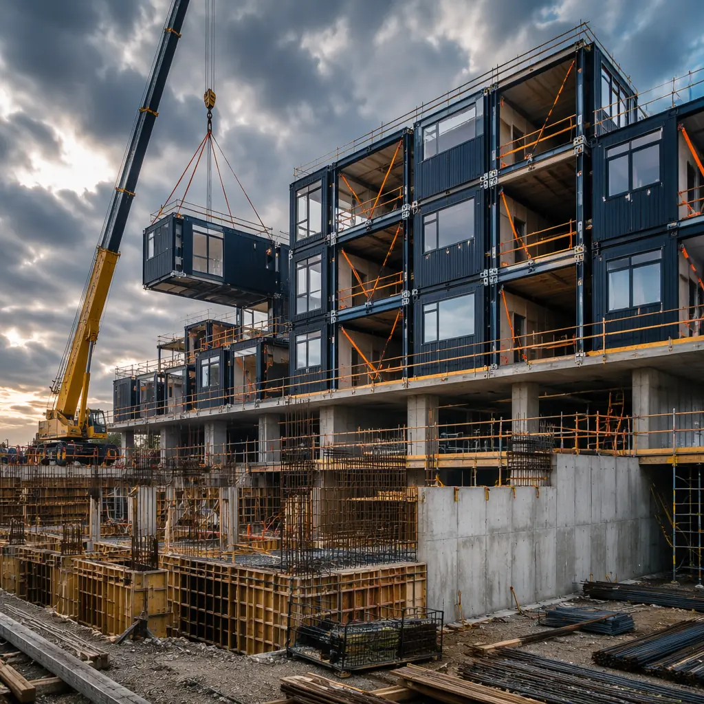
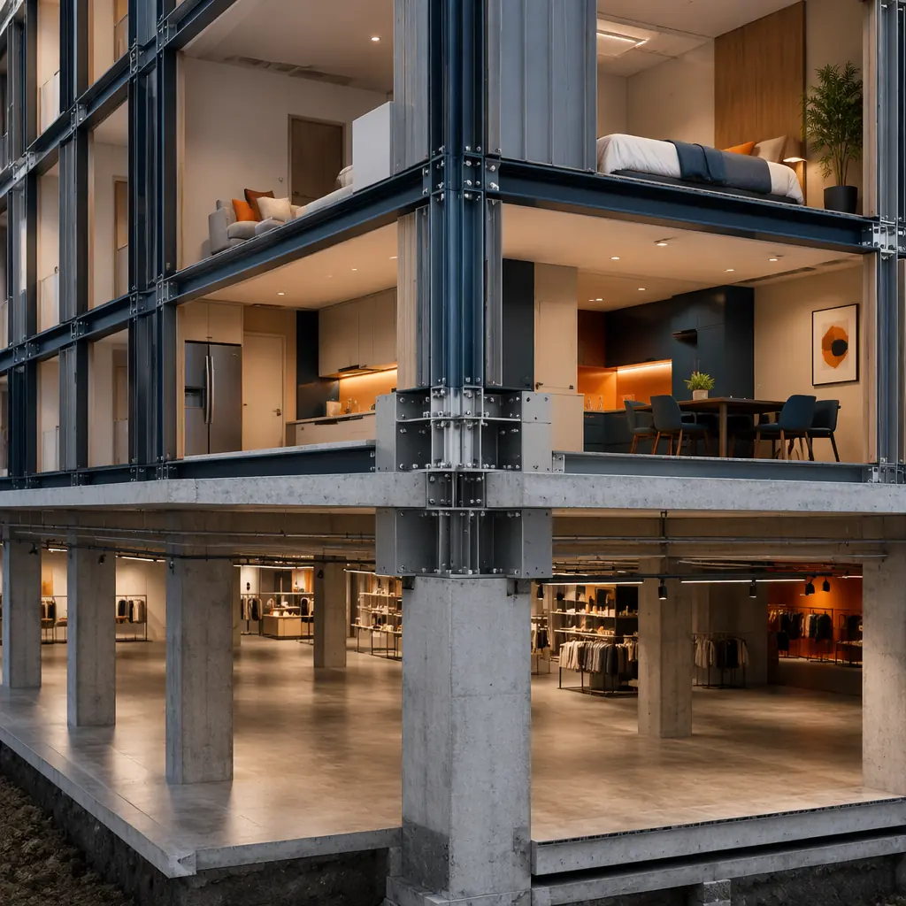
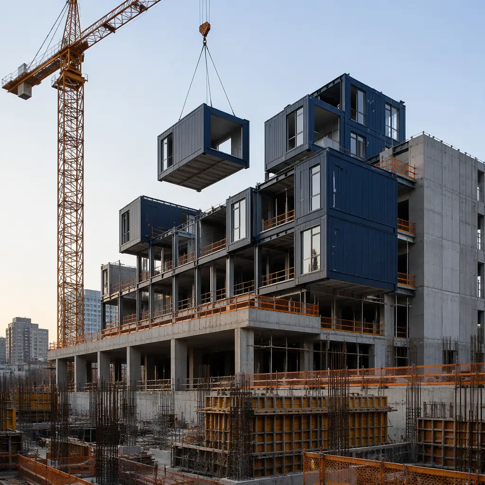
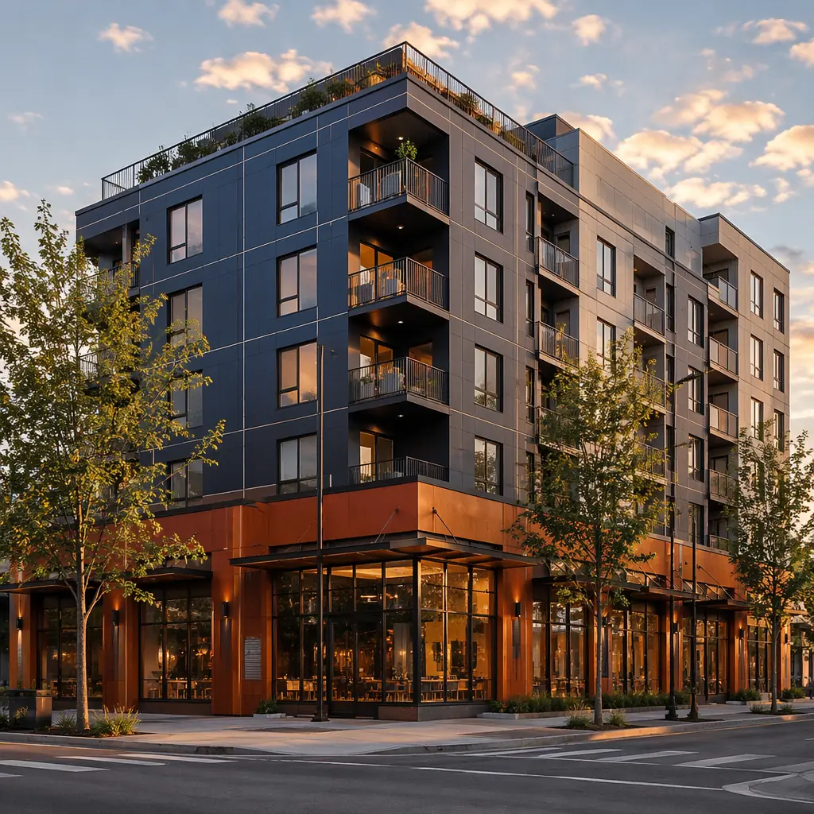

The construction industry has spent two decades debating modular versus traditional as if it were a binary choice. It is not. The most commercially successful projects are increasingly neither purely modular nor purely traditional — they are hybrid, applying modular construction where standardization delivers maximum speed and cost advantage, and traditional methods where unique spatial requirements demand flexibility. This guide provides the decision framework for determining what to modularize, what to build traditionally, and how to integrate the two approaches on the same project without schedule or interface conflicts.

The Hybrid Construction Decision Framework
Every building contains spaces that are highly repetitive and spaces that are highly unique. The core insight of a hybrid strategy is that these two categories should be built with different methods. Here is the decision matrix:
| Space Type | Characteristics | Recommended Method | Reason |
|---|---|---|---|
| Guest rooms / patient rooms / dorm units | Highly repetitive, identical MEP layout, small unit size | Modular | Maximum repetition benefit, factory QC on MEP, speed advantage |
| Lobbies / atriums / reception areas | Double-height spaces, unique design, custom finishes | Traditional | Module transport limits height, custom design better executed on-site |
| Retail / restaurant ground floor | Open plan, high ceilings, tenant-specific fit-out | Traditional | Flexibility for tenant requirements; column-free spans |
| Parking podium (levels 1–3) | Heavy structural loads, vehicle circulation, open deck | Traditional | Post-tensioned concrete more efficient for parking loads |
| Apartment / office floors (repetitive) | Identical floor plates, standardized unit mix, MEP repetition | Modular | 87% of building value in repetitive elements; maximum speed gain |
| Conference / ballroom / event spaces | Large clear span, high floor-to-floor, specialized HVAC | Traditional | Span requirements exceed module dimensions; acoustic isolation on-site |
| Mechanical penthouse / rooftop equipment | Equipment platforms, elevator overrun, cooling towers | Hybrid | Pre-assembled MEP skids on traditional structural frame |

The question is not modular or traditional. The question is: which 70–85% of your building is repetitive enough to factory-build, and which 15–30% is unique enough to justify the cost of site construction? Answer that correctly, and you capture the speed and cost advantages of modular without sacrificing the architectural flexibility that makes your project commercially viable.
Three Proven Hybrid Configurations
Configuration 1: Podium + Modular Tower
The most widely deployed hybrid model in commercial construction: a traditionally built concrete podium (levels 1–3) containing lobby, retail, amenities, and parking, with modular tower floors above containing the repetitive program — guest rooms, apartments, offices, or patient rooms.
Why it works: For a deeper look, our modular construction financing — loans,… guide covers the details. The podium captures all the unique spatial requirements (double-height lobby, open-plan retail, vehicle circulation) that modular handles poorly. The tower captures 70–85% of the building's gross floor area in factory-built modules, where modular's 50–60% schedule compression delivers the maximum financial return. The structural interface — a concrete transfer slab at the podium roof level — is well-understood engineering with established detailing standards.
Typical savings: 8–14 months schedule reduction vs all-traditional, 10–15% total project cost reduction. Most applicable to: hotels, multi-family residential, student housing, senior living.
Configuration 2: Modular Core + Traditional Shell
In this configuration, the building's core structural elements (columns, shear walls, elevator shafts, stair cores) are built traditionally on-site, while modular volumetric units are inserted into the structural bays as infill. The traditional core provides the building's lateral stability and vertical circulation; the modular units provide the finished occupiable space.
Why it works: This configuration is particularly effective for high-rise modular construction where lateral load resistance from a traditional concrete or steel core is more efficient than relying on modular unit-to-unit connections for structural stability above 8–10 stories. The traditional core also simplifies the coordination of vertical MEP risers, which can be challenging in pure modular stacks.
Typical savings: For a deeper look, our modular apartment buildings cost guide covers the details. 6–10 months schedule reduction, 8–12% cost reduction. Most applicable to: high-rise residential (12+ stories), mixed-use towers, office buildings with repetitive floor plates.
Configuration 3: Modular Wings + Traditional Central Space
A traditional central building containing shared amenities (lobby, restaurant, conference facilities, back-of-house) flanked by modular wings containing repetitive program elements. The traditional center anchors the architectural identity; the modular wings deliver the unit count efficiently.
Why it works: For a deeper look, our modular concrete construction systems —… guide covers the details. This configuration solves the architectural concern that modular buildings look repetitive or institutional. The central traditionally-built element carries the design statement — the sculptural lobby, the signature restaurant, the dramatic atrium — while the modular wings handle the unit production quietly and efficiently. The result is a building with the architectural distinction of a custom design and the cost and schedule performance of factory production.
Typical savings: 6–8 months schedule reduction, 5–10% cost reduction. Most applicable to: resort hotels, conference center hotels, large-scale healthcare campuses, university residential complexes.

Interface Management — The Critical Success Factor
Hybrid construction introduces what pure modular and pure traditional do not: interfaces between two different construction systems built by two different supply chains on two different schedules. Managing these interfaces is the single most important determinant of hybrid project success.
The critical interfaces and their management strategies:
- Dimensional tolerance stack. Traditional concrete construction tolerances are typically ±25mm (1 inch). Modular factory tolerances are ±2mm (1/16 inch). When a ±2mm module must connect to a ±25mm concrete slab, the interface detail must include an adjustable connection system that absorbs the differential. MODURA's standard interface connection provides ±40mm of adjustment in all three axes, accommodating even the most generous concrete tolerances without field modification.
- MEP riser alignment. Vertical MEP risers running through the traditional core must align precisely with horizontal branch connections in the modular units at every floor. The coordination solution is a BIM-based digital twin that models both systems at LOD 400 (fabrication-level detail) before either system is built. This is the same BIM-to-factory workflow that pure modular projects use, extended to include the traditionally built core elements.
- Fire stopping at the interface plane. Where modular units meet traditional structure, the fire separation must be continuous despite the construction joint. The detail includes intumescent fire stopping at the module-to-slab interface, tested and certified as a complete assembly rather than relying on field-applied caulking that may not be installed consistently.
- Weather enclosure sequencing. One of the most common hybrid project failures: modular units arrive on site before the traditional structure's weather enclosure is complete, exposing factory-finished modules to rain and construction dust. The correct sequencing strategy installs temporary weather protection at the interface plane and schedules module delivery to occur within a defined weather window after the traditional structure's roof and exterior walls are in place.
An interface is a risk only when it is discovered during construction. An interface designed and modeled at LOD 400 before either system is built is not a risk at all — it is a known condition with a documented solution, procured materials, and an assigned installation sequence. The difference between these two states is entirely a function of pre-construction coordination.
Cost Comparison: Pure Modular vs Hybrid vs Pure Traditional
For a representative 120,000 sq ft, 8-story mixed-use building with ground-floor retail (15,000 sq ft), parking podium (30,000 sq ft), and 75 apartment units above (75,000 sq ft):
| Metric | Pure Traditional | Hybrid (Podium Traditional + Modular Tower) | Pure Modular |
|---|---|---|---|
| Total construction cost | $24.0M ($200/sq ft) | $21.6M ($180/sq ft) | $22.8M ($190/sq ft) |
| Construction schedule | 22 months | 14 months | 12 months |
| Interest during construction (8%) | $1.76M | $1.01M | $0.91M |
| Revenue from early opening (8 months) | Baseline | +$1.5M | +$1.9M |
| Total project cost advantage | Baseline | $4.65M (19.4%) | $3.95M (16.5%) |
The hybrid approach delivers the best total project economics because it applies modular exactly where modular generates the highest return — the repetitive residential tower floors that represent 62.5% of the building area — while using traditional methods for the ground-floor retail and parking podium where modular offers less advantage and more constraint. The 19.4% total cost advantage represents approximately $4.65 million in real savings on a single project, combining lower construction cost, reduced financing cost, and accelerated revenue.
For a more detailed comparison with specific construction methods, see our series on modular vs traditional, modular vs precast concrete, and modular vs steel frame construction approaches.
